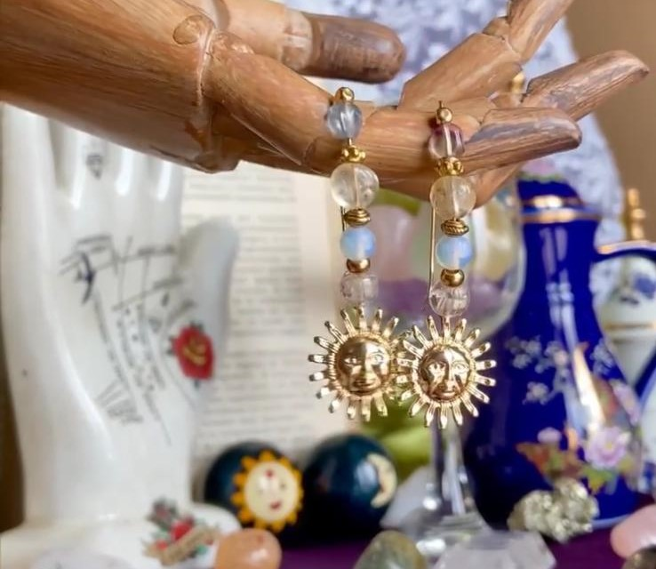
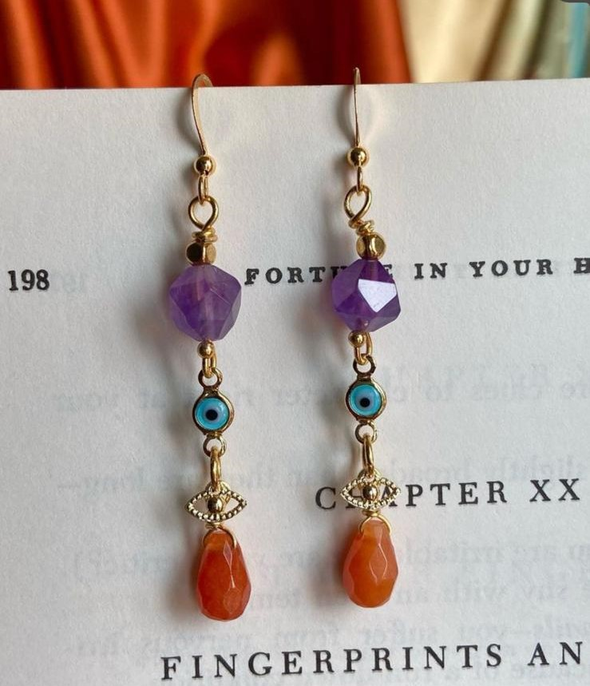
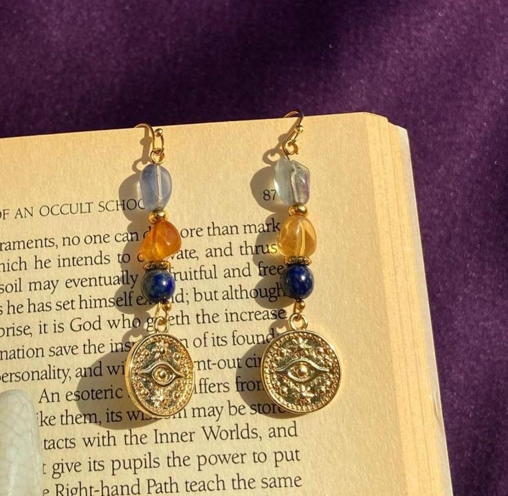
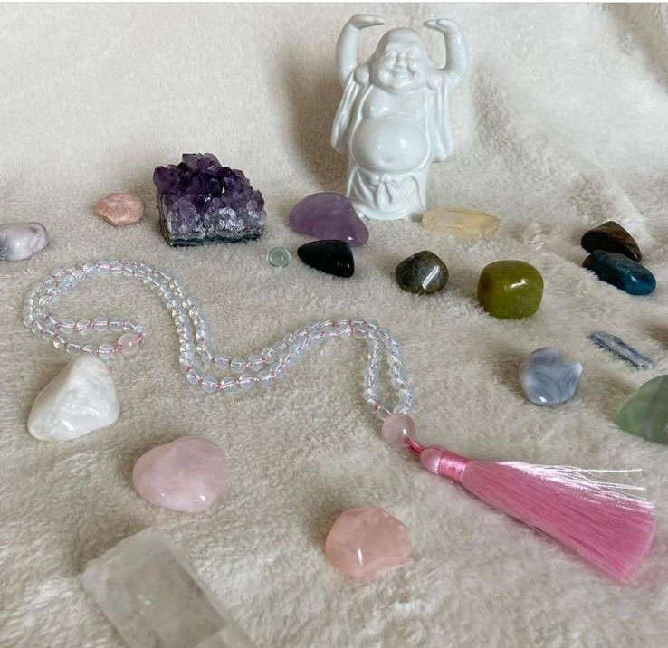
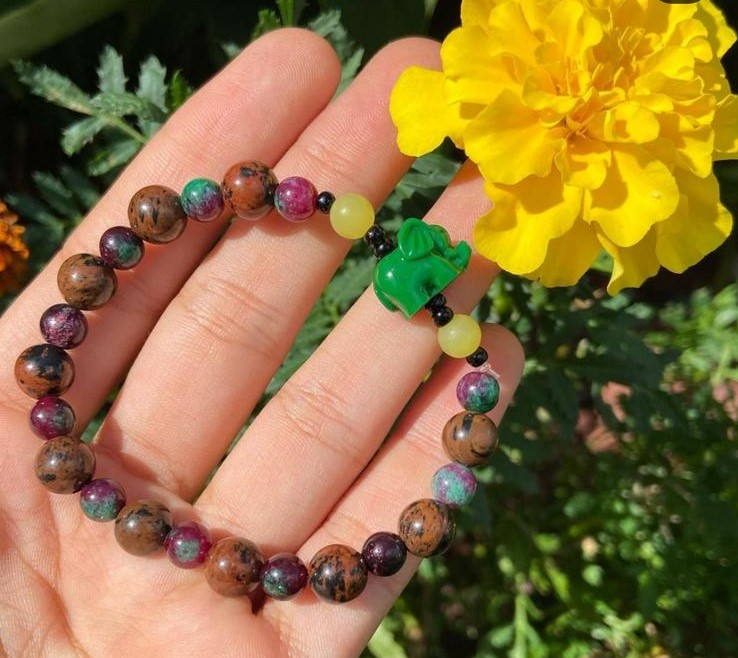
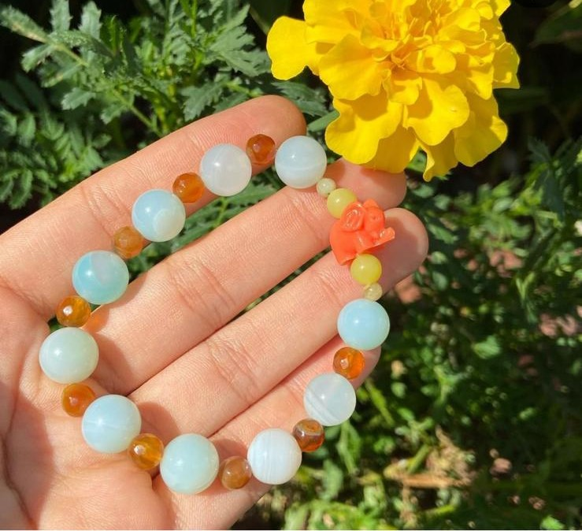
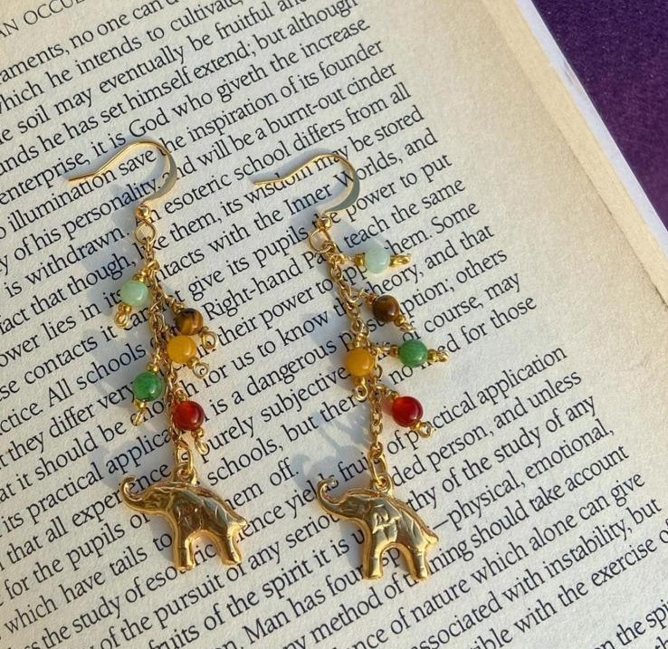
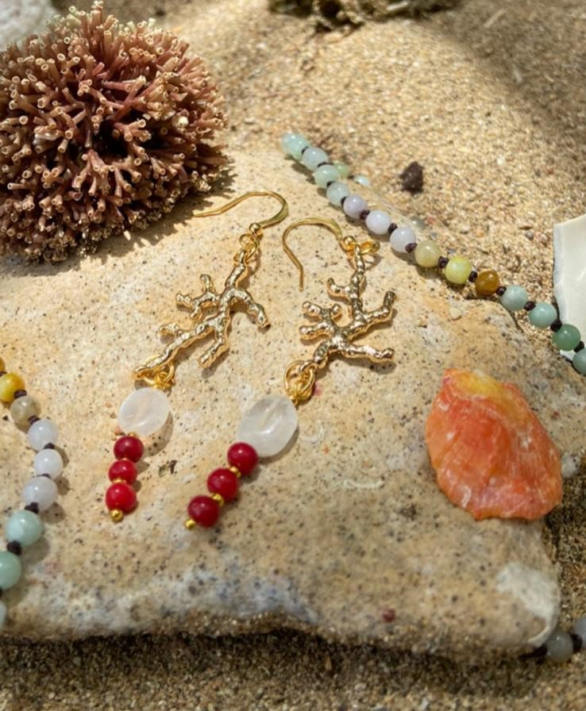
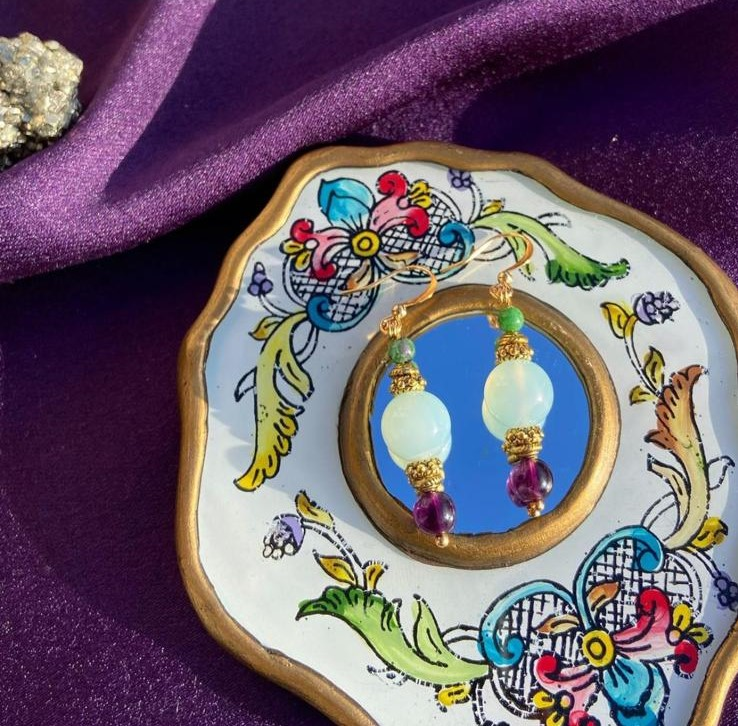

Sun Earings
Made with opalite, citrine amethyst and clear quartz.
Powerful citrine and calming amethyst, perfect combination to enhance
your inner shine.

Evil eye earings
Amethyst and orange Jade made the perfect combination
for beauty and tranquility

Eye earings
All seeing eye, these protection earing's are made with
fluorite, citrine and lapis lazuli.

Mala Beads
Mala Beads, specifically made with rose quartz accents
for self-love meditation.

Elastic Bracelet
Elastic bracelet made with mahogany obsidian quartz,
jade and love. The elephant is a symbol of wisdom and good luck.

Elastic Bracelet
Elastic bracelet made with agate quartz, jade and love.
The elephant is a symbol of wisdom and good luck.

Elephant earings
Made with carnelian, agate, ruby zoisite, tiger eye and jade.

Beach vibes earings
These are inspired in the sensation that bring
us the beach and his magic. Are made with coral and moonstone.

Beautiful Quartz earings
These are inspired in a genie bottle. Made with
ruby zoisite, agate and fluorite.